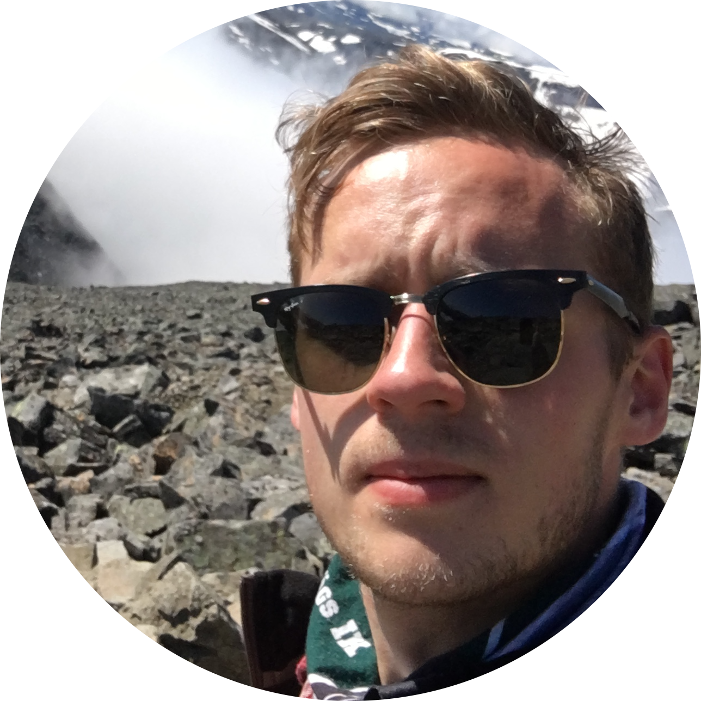

Jacob Jansson
place
Jönköping
mail
Jacob950422@gmail.com
phone
0727069659
work
LinkedIn
github
GitHub
Vem är jag?
Född år 1995 i de västgötska skogarna, flyttade sedan till Malmö i 3 år innan jag landade i Jönköping
På fritiden trivs jag bra på golfbanan eller i padelburen, det blir även en del spelande på datorn.
Utbildning & Arbete:
3 år på Tingsholmsgymnasiet inriktning Elteknik.
Tidigare anställd som arbetsledare inom el-entreprenad, på Bogesunds El&Tele där jag arbetade i cirka 8år. Efter det bytte jag jobb till Eltjänst i vätterbygden.
Där stannade jag cirka ett år innan jag kände att jag vill göra något annat, därför sökte jag till Javautveckling på Campus Värnamo.
Jag har alltid varit intresserad av programmering och jag ser mycket fram emot att arbeta med det i framtiden.